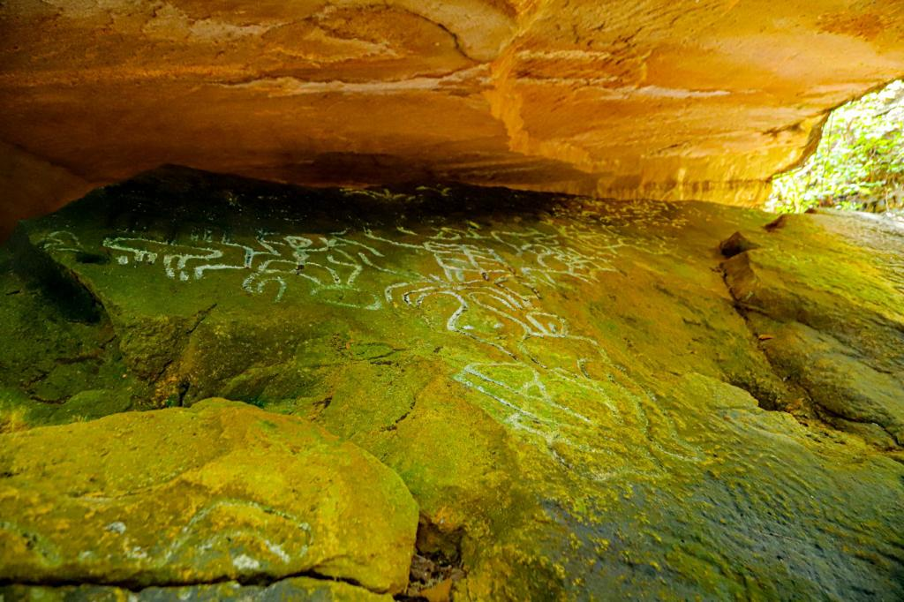

Los secretos ancestrales de Tubará
Mitos y Leyendas / Patrimonio ancestral

La historia
Entre los cerros y paisajes del departamento del Atlántico se encuentra Tubará, un municipio cuya historia está profundamente relacionada con el legado del pueblo indígena Mokaná. Mucho antes de la llegada de los españoles, estas tierras fueron habitadas por comunidades que desarrollaron sus propias formas de organización, conocimientos y expresiones culturales.
Uno de los testimonios más interesantes de este pasado es la Piedra Pintada, un sitio de arte rupestre ubicado en el territorio de Tubará, asociado con la memoria ancestral Mokaná. Sus grabados y representaciones en piedra despiertan curiosidad por los conocimientos, símbolos y formas de comprender el mundo que tenían sus antiguos habitantes.
Para la tradición cultural Mokaná, las representaciones ancestrales guardan una relación con la naturaleza, los animales, las plantas, el agua y los elementos del universo. Estas expresiones permiten acercarse a una cosmovisión en la que la vida, el territorio y la espiritualidad se encuentran profundamente conectados.
Sin embargo, los secretos de Tubará no se encuentran únicamente en sus piedras. También permanecen en las historias transmitidas por los mayores, en los conocimientos sobre la tierra y en las tradiciones que han pasado de generación en generación. La memoria oral constituye una parte fundamental de la identidad de esta comunidad.
A pesar de los cambios históricos y culturales que experimentaron estas comunidades durante la colonización, el legado Mokaná continúa presente en los esfuerzos por preservar sus costumbres, recuperar sus conocimientos ancestrales y fortalecer su identidad indígena.
Actualmente, Tubará representa un lugar de gran interés histórico y cultural para quienes desean conocer las raíces indígenas del Caribe colombiano. Sus paisajes, su patrimonio arqueológico y la memoria de sus habitantes permiten descubrir una historia que todavía tiene mucho por contar.
Los rastros de una cultura ancestral
La Piedra Pintada constituye uno de los elementos más representativos del patrimonio arqueológico asociado con Tubará. El arte rupestre permite conservar huellas de antiguas expresiones humanas y constituye una oportunidad para investigar cómo las comunidades del pasado representaban su entorno y transmitían sus conocimientos.
Los símbolos y las tradiciones Mokaná también encuentran continuidad en sus expresiones culturales actuales, como la música, las artesanías, la gastronomía y las celebraciones comunitarias. Entre sus manifestaciones se destacan los trabajos artesanales con materiales naturales, así como los saberes relacionados con cultivos tradicionales como el maíz y la yuca.
Conocer estos elementos permite comprender que el legado ancestral de Tubará no pertenece solamente al pasado: es una memoria viva que continúa construyendo la identidad de sus comunidades.
Fuentes de consulta
Resguardo Colonial de Indígenas Mokaná Tubará. Ancestralidad Mokaná Tubará. Consulta sobre la memoria ancestral, la cosmovisión y el patrimonio cultural.
Consultar fuenteCorporación Autónoma Regional del Atlántico (CRA). Tubará, herencia de un mundo ancestral. Documento de diagnóstico y patrimonio cultural.
Consultar documentoGobernación del Atlántico (2026). Entrega de la Casa de Cultura Mokaná en Tubará y fortalecimiento del patrimonio ancestral.
Consultar fuente